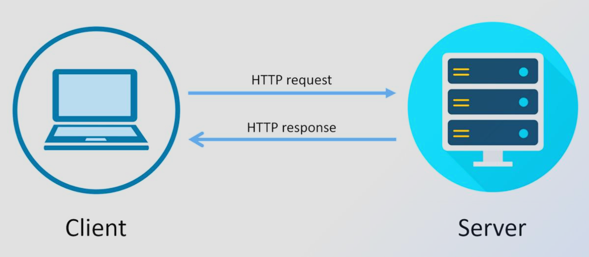

What is a Web Server?
Essentially, a web server is a computer system that can deliver web content to end users over the internet through a web browser. A web server can be in the form of hardware, software, or the two of them working simultaneously.
Regarding hardware, a web server is the computer that stores web server software and a website’s component files such as: HTML documents, images and JavaScript files. The web server connects to the internet, which in turn, supports physical data exchange between other devices connected to the web.
On the software side, the web server is split into several parts that control how users access hosted files. We call this a HTTP server, which is a software that understands web addresses (URLs) and HTTP (The protocol used for communication between web browsers and servers.).
Role of a Web Server
A web server can store and serve a website’s files, all HTML documents and their assets, which includes images/videos, CSS stylesheets, JavaScript files, and fonts. Web servers provide several advantages for the user as opposed to their personal computer for the following reasons:
- Web servers are typically more available because they’re constantly running and connected to the internet.
- Dedicated web servers can also always have the same IP address, also known as a dedicated IP address.
- Dedicated web servers are also typically maintained by a third party, meaning the user does not have to dedicate constant supervision over their web server.
A web servers main role is to deliver requested content to users. When browsers request a resource, the HTTP server searches for the requested file, then sends it back to the browser. If the requested file cannot be found, the server returns the 404 error message to the browser.
Client-Server Communication
When computing over the web, computers and other devices connected to the internet are often referred to as clients and servers. Clients are the internet-connected devices (a phone connected to a mobile network or a personal computer connected to home Wi-Fi) that are accessing web software's (web browsers such as Opera, Firefox and Google Chrome). Servers are the computers that store webpages, sites, or apps. When a user attempts to access a webpage, a copy of the webpages code is downloaded from the server to that user's machine, in which they can now use the webpage. HTTP messages are the mechanism used to exchange data between a server and a client in the HTTP protocol. There are two main types of messages:
- Request messages:Sent by the client to the server, requesting a resource.
- Response messages: Sent by the server to the client, containing the requested resource or an error message.

What happens when you visit a website?
- Entering the URL:The browser examines and breaks down the URL into parts such as the protocol, domain name and path so it knows what resource is being requested.
- DNS Resolution:The browser uses DNS to translate the domain name into the IP address of the server hosting the website.
- Establishing a TCP Connection:The browser and server create a reliable connection so data can be exchanged between them
- Establishing a Secure Connection: When websites use HTTPS, the browser and server perform a TLS handshake to encrypt their communication.
- Send an HTTP Request:The browser sends a request letting the server know what webpage or resource it’s requesting.
- Server Processes the Request:The server receives the request and generates the requested content and prepares a response.
- Server sends an HTTP Response:The server then sends the requested content back to the browser along with information such as a status code and content type.
- Browser Renders the Webpage:The browser interprets the resources and displays the finished webpage to the user.
HTTP and HTTPS
Static vs Dynamic Content
Static Content
Static content is content that does not change. It is the same for every user and is typically stored in HTML files on the web server.
Examples of static content include images, videos, and text files. Static content is easy to cache and can be served quickly to users.
Dynamic Content
The type of content that gets created dynamically (can be created or changed after the fact) prior to being sent to the end-user’s web browser. An example of this would be when a dynamic web server uses some other applications, such as an application server and/or a database to process your original request and create your desired output. The ability to have a webpage generate different content based upon who/what makes the request, how many times they’ve made the request, what date/time it is, etc.